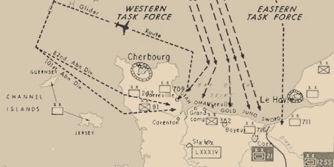

Hover the pointer over the battle markers in the map to
view more detailed information about each landing site.

Sainte-Mère-Église
The 82nd Infantry Division mistakenly landed directly in the town of Sainte-Mère-Église
at 1:40 a.m., resulting in heavy casualties. Burning buildings illuminated the night sky, making
the defenseless paratroopers easy targets and the down-draft from the flames sucked several men
into the fires. Other troopers were caught hanging from trees and utility poles and shot before
they could cut themselves loose.
However, the Germans were confused by conflicting reports of allied landings and attacks and
retired in the middle of the night. This contributed to the ease by which the 505th PIR took
the town by 5:00 a.m. The lightly armed troops held the town against heavy German
counter-attacks, finally securing it on June 7th with help from tanks sent from nearby
Utah Beach.
Utah Beach
Utah Beach was a staging area to secure the important port facilities at Cherbourg. It was added
later in the D-Day planning and necessitated a month-long delay for the assembly of additional l
landing crafts. Troops landed in four waves beginning at 6:30 a.m. and were met with minimal
resistance. The 4th Infantry Division landed 21,000 troops on Utah suffering only 197 casualties.
By the end of June 6th, Allied forces had captured only about half of their objectives,
but the beachhead was secure and could be used as an important staging area in subsequent days.
Cherbourg was captured on June 26, but only after the Germans had destroyed the port facilities.
The port was not fully operational until September.
Omaha Beach
Very little went according to plan at Omaha Beach. Most of the landing craft missed
their targets and came up against unexpectedly-strong opposition. Under heavy fire,
army engineers worked to clear beach obstacles but the time required to clear the
beach caused subsequent landing crafts to bunch up and obstruct the clear landing
channels.
Eventually small groups of survivors were able to improvise an assault on the
entrenched German troops. By the end of June 6, two isolated footholds on the beach
were achieved and were exploited over the next several days as the invasion forces
moved inland.
Gold Beach
The British landing at Gold Beach was designed to link up with forces at Omaha Beach and
move inland to Bayeux. High winds made it difficult to establish a beachhead and the
amphibious assault did not begin until 7:30 a.m. However heavy bombardment disabled
three of the four large German guns covering the beach.
Due to stiff German resistance, Bayeux was not captured until June 7. British casualties
at Gold are estimated at 1,000–1,100. German casualties are unknown.
Juno Beach
The objective at Juno ws to seize the Carpiquet airport west of Caen and link up
with the invasion forces at Gold and Sword. The beach was defended by two German
battalions and a panzer division, making it the second most heavily defended beaches
on D-Day.
The landings encountered heavy early resistance and early ship bombardment was ineffective at
breaking up the German forces. The push inland towards Carpiquet achieved mixed results with
the sheer number of forces on the beach delaying reinforcements. However by 11 p.m., the
invasion force had reached its objectives and succeeded in pushing farther
inland than any other landing force on D-Day.
Sword Beach
Sword was the easternmost landing site of the Normandy Invasion. Sword was divided into
several sectors with each sector divided into beaches. Sword is located about 9 miles
from Caen, the goal of the 3rd Infantry Division.
The Sword landing suffered few casualties but it's route inland suffered from traffic
congestion that limited the invasion's effectiveness. Troops at Sword experienced the
only armour counter-attack of D-Day, mounted by the 21st Panzer Division.